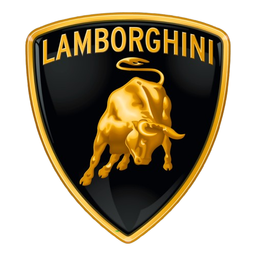

Lamborghini HuracánPerformances et consommation de la Lamborghini Huracán
La Lamborghini Huracán est équipée d'un moteur V10 atmosphérique de
5,2 litres développant environ 640 chevaux selon les versions. Elle
accélère de 0 à 100 km/h en environ 2,9 secondes et réalise le 0 à
200 km/h en un peu moins de 9 secondes. Sa vitesse maximale avoisine
les 325 km/h.
En termes de consommation, la Huracán affiche une moyenne homologuée
d'environ 14 L/100 km en cycle mixte, pouvant grimper bien au-delà
en conduite sportive. Ces chiffres varient selon la version (RWD,
EVO, STO) et le style de conduite adopté.